Transparent.
Flexible. Multi-touch.
Two rows of six electrodes on a transparent polyimide FPCB preserve display visibility. Thin traces connect the sensing areas to the capacitive touch controller.
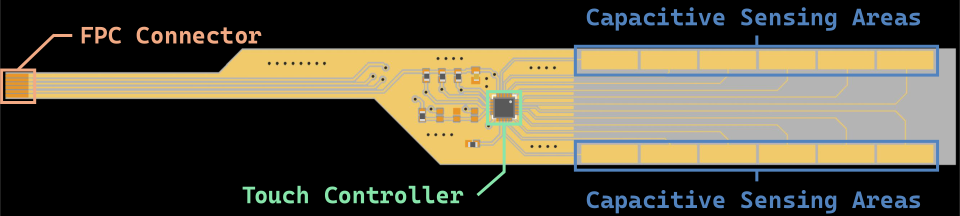
Penn State / UIST ’26
Rich interaction.
Right on your finger.
A smart ring with a multi-point capacitive touch screen. Familiar gestures. Immediate visual feedback. All on one curved surface.
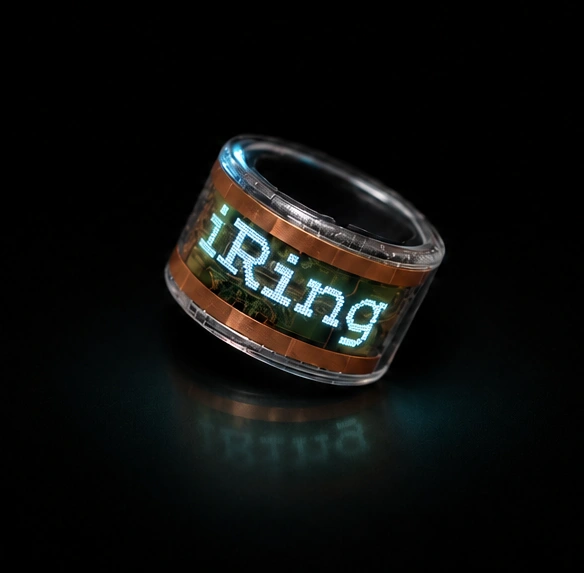
What if you could touch a ring and see its response, right where you interact?
iRing brings capacitive multi-touch and a flexible OLED display to the same finger-worn surface. It closes the loop between input and feedback, enabling brief, glanceable interactions with a thumb or the other hand.
Direct touch, on-ring feedback, and everyday application scenarios. Video from the project presentation.
A custom flexible touch PCB sits over the OLED display. A compact main board, curved battery, and 3D-printed housing bring sensing, computation, and feedback into a wearable ring.
Designed as an open-source, reproducible platform for exploring on-ring interaction.
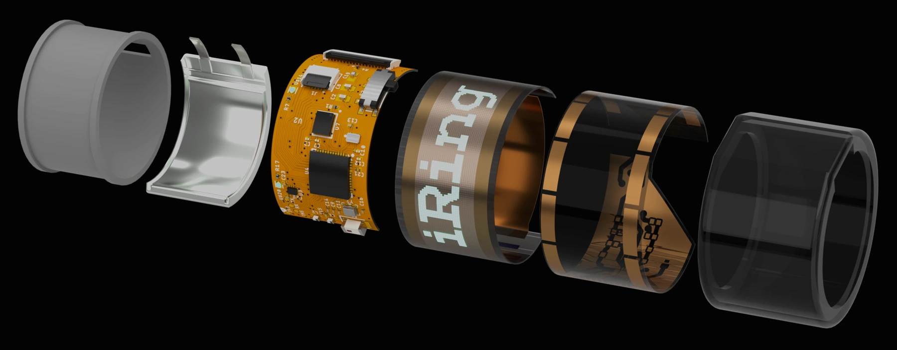
Two rows of six electrodes on a transparent polyimide FPCB preserve display visibility. Thin traces connect the sensing areas to the capacitive touch controller.

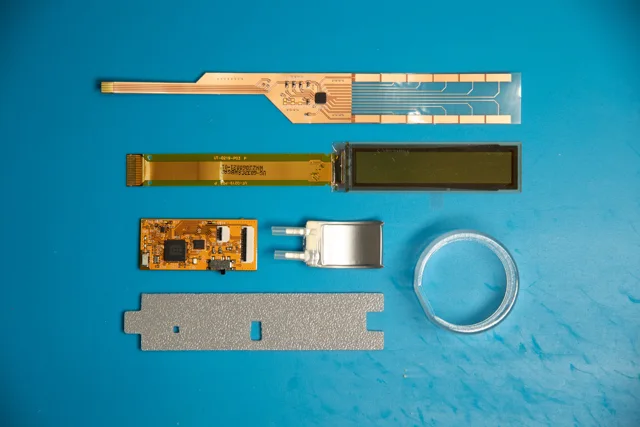
01 / Prepare parts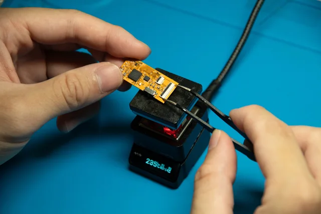
02 / Solder circuits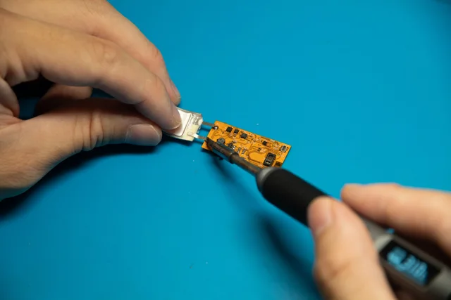
03 / Connect battery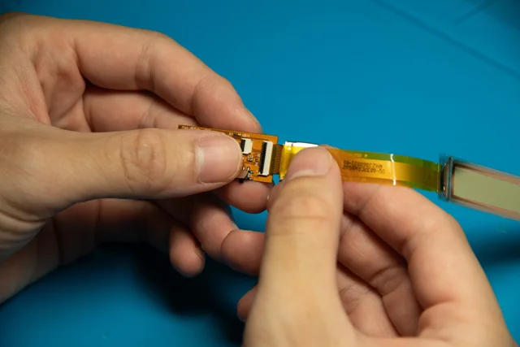
04 / Install OLED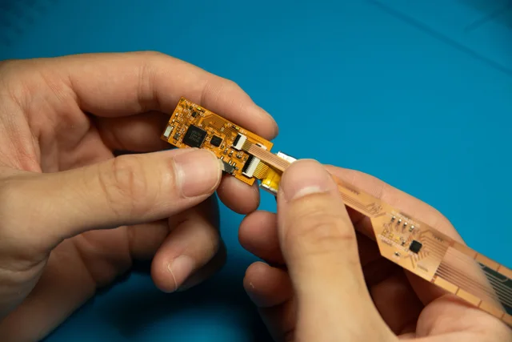
05 / Add touch PCB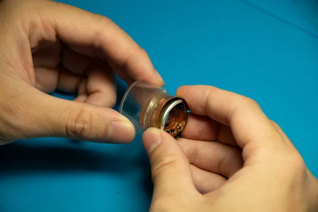
06 / Assemble case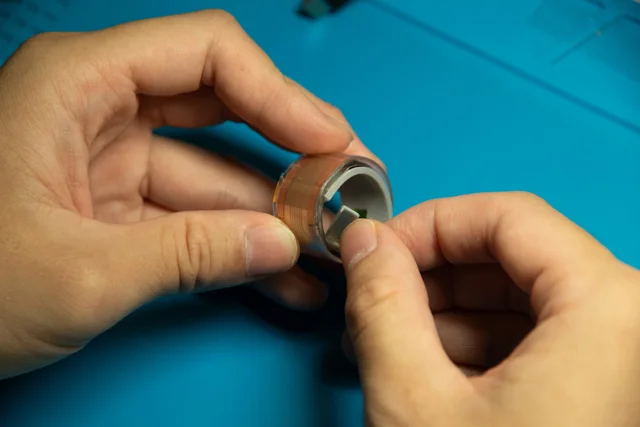
07 / Fit inner ring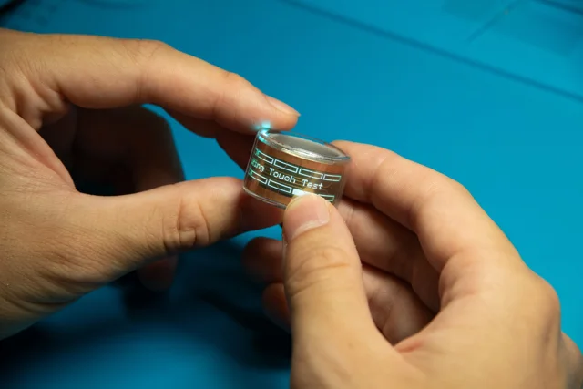
08 / Test prototypeTap, slide, pinch, and spread—familiar touch primitives adapted to an ultra-small, curved display. Nano interactions connect compact finger movements to immediate visual responses.
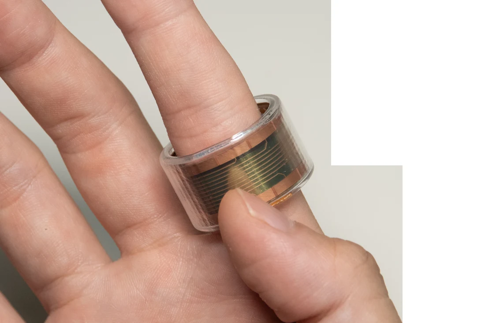
One brief contact.
Two taps in quick succession.
Touch and hold.
Move across adjacent regions.
Bring two touch points together.
Move two touch points apart.
The prototype explores how direct touch and glanceable feedback can support brief tasks, from controlling music on the move to navigating text and checking sensor readings.
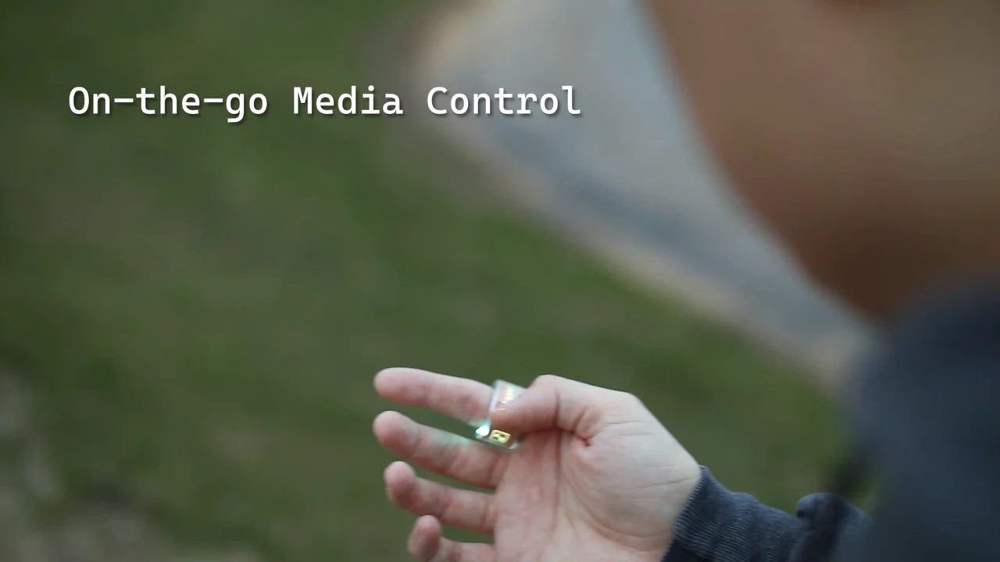
Adjust volume wirelessly while running, with feedback directly on the ring.
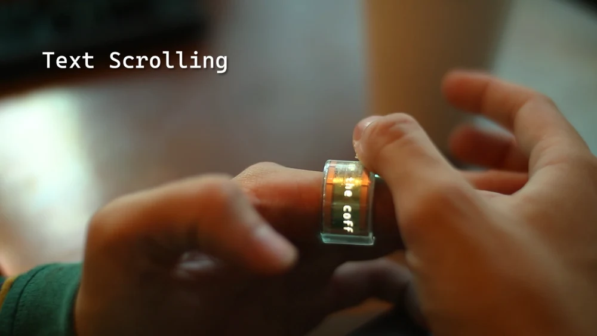
Slide to scroll through messages. Pinch or spread to adjust text size.
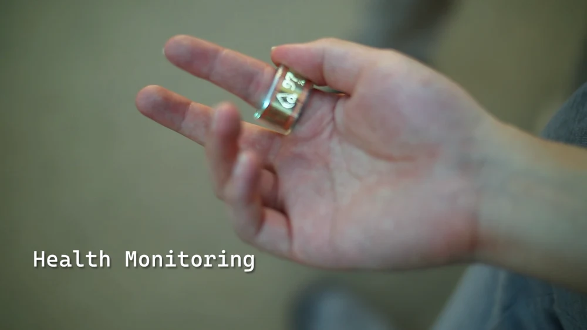
Navigate sensor measurements and view heart rate and blood oxygen on the display.
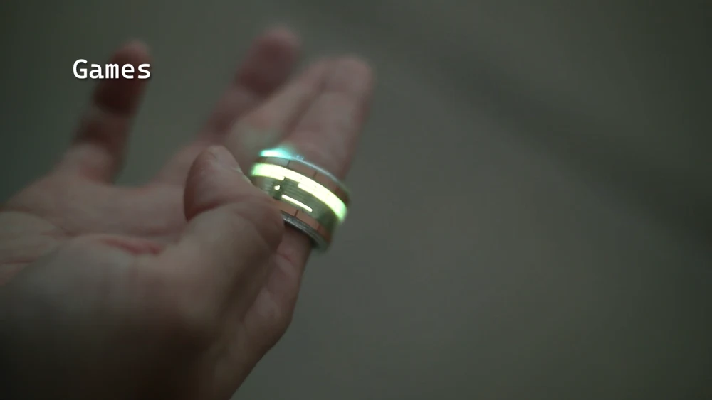
Play Brick Breaker with touch and ring rotation, following the game on your finger.
The paper also explores menu navigation and brief LLM-mediated interactions.
A user study evaluated gesture recognition, learning, usability, comfort, and social acceptability. The results demonstrate the feasibility of direct touch interaction on a ring.
Across the six touch gesture classes.
Across the 12 touch regions.
Direction and segment count.
A short-term prototype study: long-term comfort, durability, and everyday use remain open research questions. Participants favored brief tasks such as media control and message scrolling; larger displays remain useful for tasks needing more visual space or precision.
The paper
The 39th Annual ACM Symposium on User Interface Software and Technology
November 2–5, 2026 · Detroit, Michigan
@inproceedings{liu2026iring,
author = {Liu, Runze and Lu, Taiting and Li, Zhenghao and
Wang, Yixi and Yuan, Shengming and Gowda, Mahanth},
title = {iRing: Rich Interaction on Smart Ring with
Multi-point Capacitive Touch Screen},
booktitle = {Proceedings of the 39th Annual ACM Symposium
on User Interface Software and Technology},
series = {UIST '26},
year = {2026},
publisher = {Association for Computing Machinery},
doi = {10.1145/3830398.3830549}
}Supported by the U.S. National Science Foundation, CAREER-2046972.